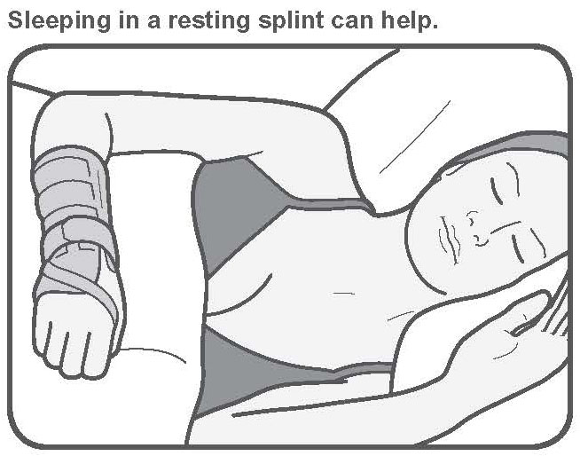
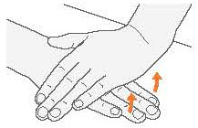
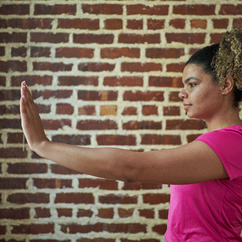
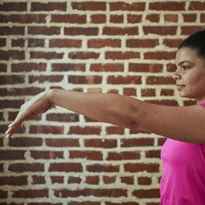
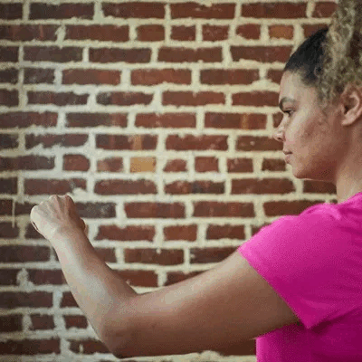
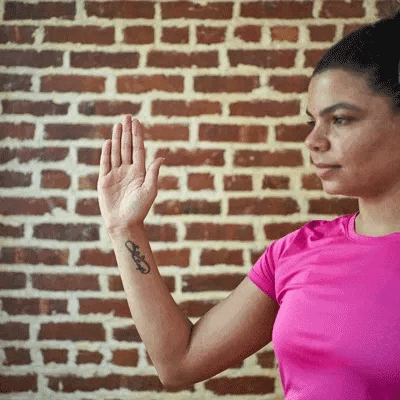
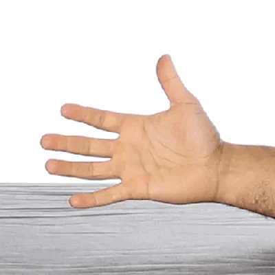

রাতে ঘুমানোর সময় ব্যথা বা অসুবিধা হলে
রাতে ঘুমানোর সময় হাতে ব্যথা বা অসুবিধা হলে, একটি বিশ্রামের স্প্লিন্ট (হাতের একটি ধরনের সাপোর্ট) ব্যবহার করলে উপকার হতে পারে। আবার, যদি আপনার সমস্যা কোনো নির্দিষ্ট কাজের কারণে হয়, তাহলে সেই কাজ করার সময় ব্যবহার করার জন্য একটি বিশেষ স্প্লিন্ট কার্যকর হতে পারে।
আপনার ডাক্তার বা ফিজিওথেরাপিস্ট আপনাকে কোন সময়, কোন হাতে, এবং কীভাবে স্প্লিন্ট ব্যবহার করবেন, সে ব্যাপারে ভালোভাবে পরামর্শ দিতে পারবেন।
সহজ ব্যায়াম
১। কবজি তোলা ব্যায়াম (Wrist Lift)
- একটি হাত টেবিলের উপর রাখুন, তালু নিচে দিকে থাকবে।
- আঙুলগুলো উপরের দিকে তুলুন।
- অন্য হাত দিয়ে উপরের হাতের গিড়ার উপর রাখুন।
- নিচের হাত আঙুল তুলতে চাইবে, আর উপর হাত চেপে ধরবে।
- আপনার ফোরআর্মে টান অনুভব করবেন।
- হাত বদলে অন্য হাতে করুন।
২। কবজি উপরে বাঁকানোর ব্যায়াম (Wrist Extension Stretch)
কতবার করবেন:
- প্রতি হাতে ৫ বার
- দিনে ৪ বার
- সপ্তাহে ৫–৭ দিন
কীভাবে করবেন:
- একটি হাত সোজা করে সামনে বাড়ান।
- কবজি উপরের দিকে বাঁকান (STOP সাইন দেখানোর মতো)।
- অন্য হাত দিয়ে তালু চেপে নিজের দিকে টানুন।
- ১৫–৩০ সেকেন্ড ধরে রাখুন।
- অন্য হাতে পুনরাবৃত্তি করুন।
৩। কবজি নিচে বাঁকানোর ব্যায়াম (Wrist Flexion Stretch)
- প্রতি বার ৫ বার রিপিট
- দিনে ৪ বার
- সপ্তাহে ৫–৭ দিন
- একটি হাত সোজা করে সামনে বাড়ান।
- কবজি নিচের দিকে বাঁকান, তালু শরীরের দিকে থাকবে।
- অন্য হাত দিয়ে আঙুল ধরে শরীরের দিকে টানুন।
- ১৫–৩০ সেকেন্ড ধরে রাখুন।
- হাত বদলে পুনরাবৃত্তি করুন।
৪। মেডিয়ান নার্ভ গ্লাইড ব্যায়াম
- দিনে ১০–১৫ বার
- সপ্তাহে ৬–৭ দিন
হাতের নার্ভ আরামে চলাচল করতে সাহায্য করে।
- হাত সোজা করে তালু বাইরের দিকে রাখুন।
- মুঠো করুন, পরে খুলে ফেলুন (প্লেন)।
- কবজি মুখের দিকে বাঁকান।
- বুড়ো আঙুল আলাদা করুন।
- হাত ঘুরিয়ে তালু ও ফোরআর্মের দিকে তাকান।
- অন্য হাতে বুড়ো আঙুল টানুন।
- হাত বদল করে পুনরাবৃত্তি করুন।
৫ সোজা টেনডন গ্লাইড ব্যায়াম
- প্রতি বার ৫–১০ বার
- দিনে ২–৩ বার
- সপ্তাহে প্রতিদিন
- হাত সোজা করে STOP সাইন দেখান।
- আঙুল নিচে বাঁকিয়ে তালু স্পর্শ করান (৩ সেকেন্ড)।
- মুঠো করুন (বুড়ো আঙুল বাইরে) (৩ সেকেন্ড)।
- অন্য হাতে পুনরাবৃত্তি করুন।
৬। চাপাহীন অনুভূমিক টেনডন গ্লাইড ব্যায়াম
- প্রতি হাতে ৫–১০ বার
- দিনে ২–৩ বার
- সপ্তাহে প্রতিদিন
- হাত STOP সাইন মতো তুলুন।
- নিচের গিড়া থেকে ভাঁজ করুন, তালুর সাথে লম্বভাবে রাখুন (৩ সেকেন্ড)।
- মাঝের গিড়া থেকে মুড়িয়ে তালু স্পর্শ করুন (৩ সেকেন্ড)।
- হাত সোজা করুন ও অন্য হাতে করুন।






